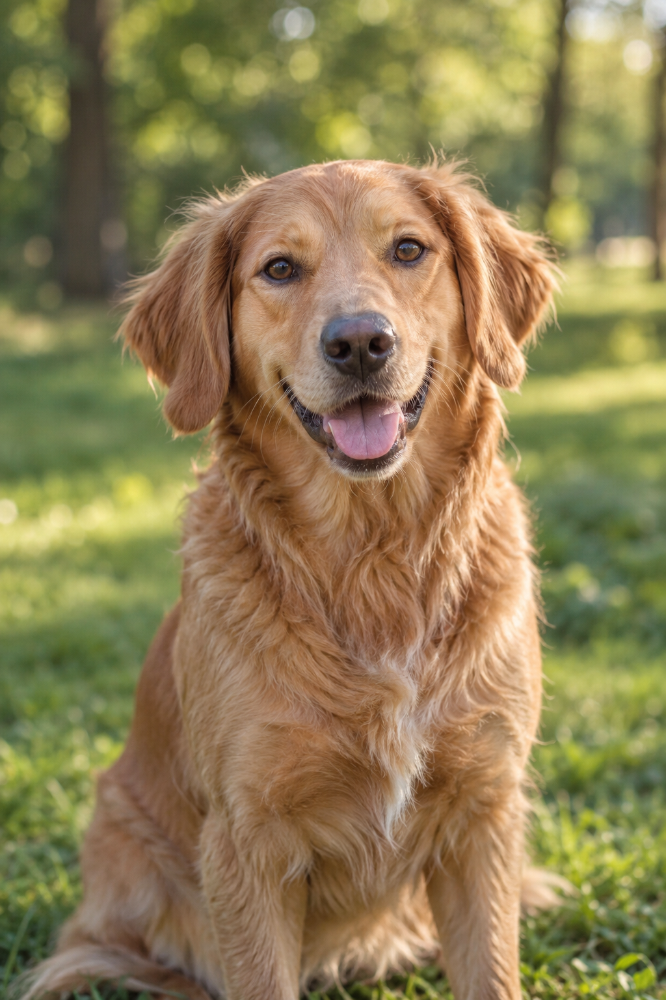
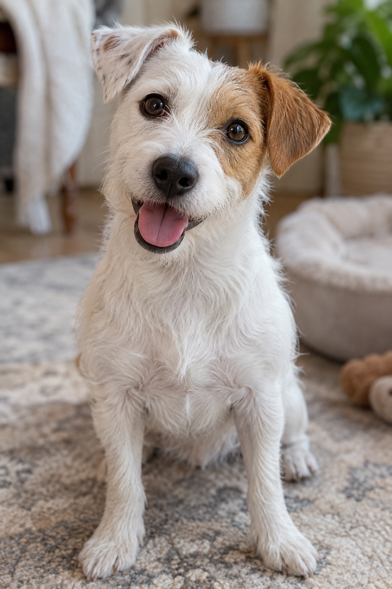
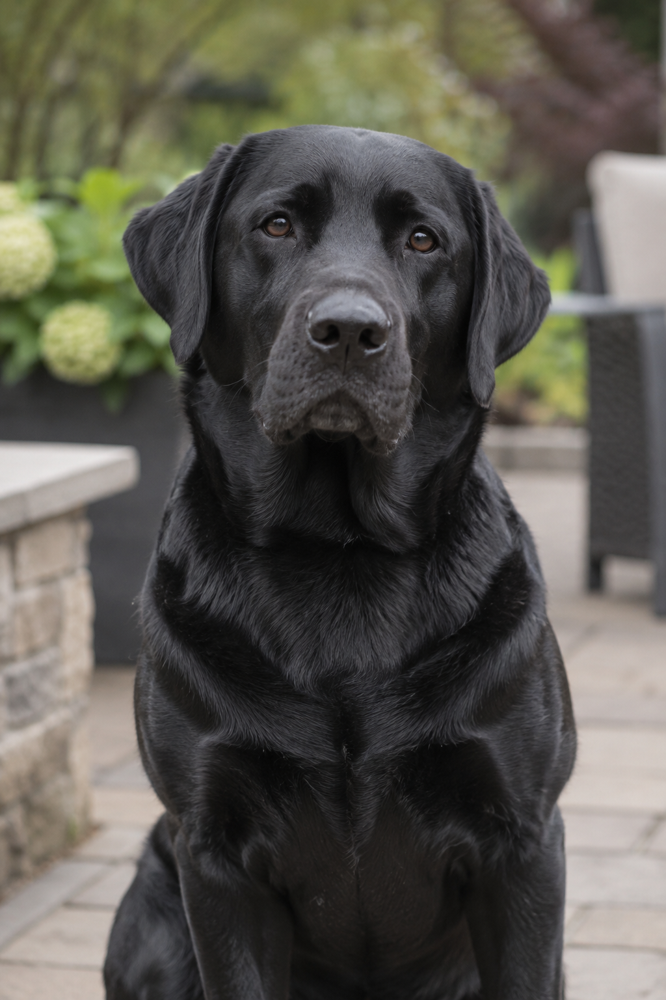
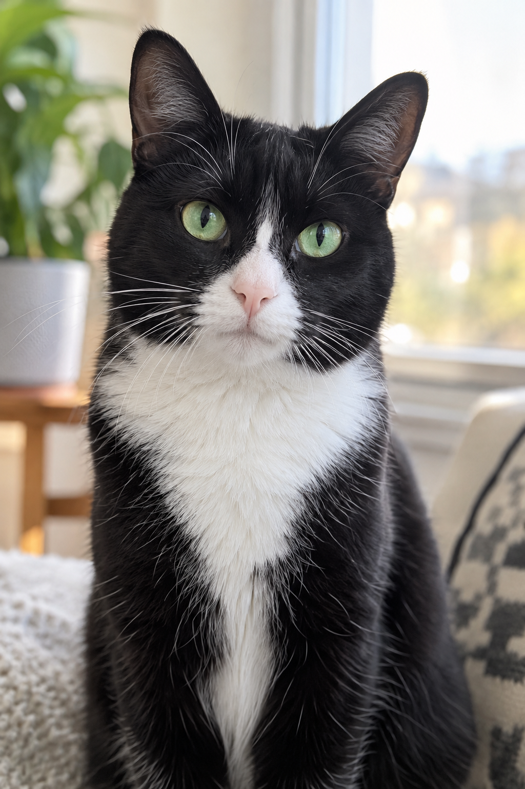
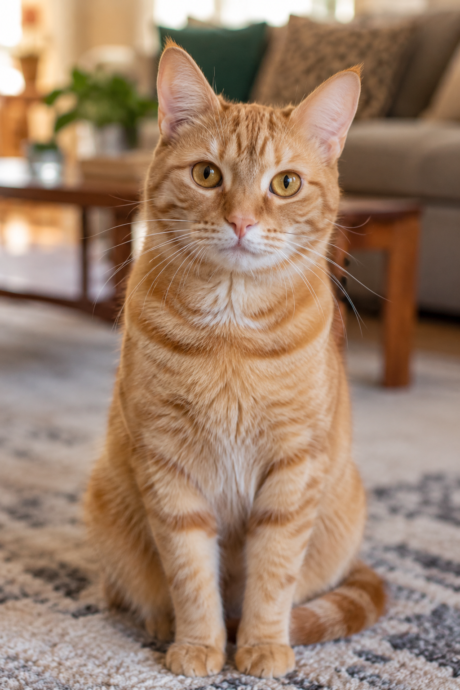
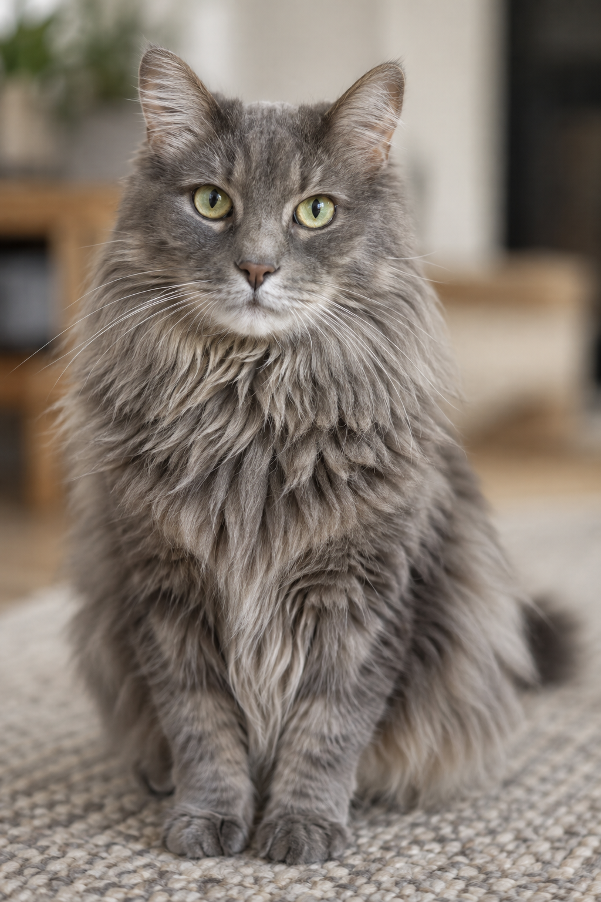

Kira
Perra
Perra dorada, alegre, dócil y sociable, de 3 años de edad.
+ Info - Ver ficha en PDF de Kira🐾 Refugio Esperanza
Filtrá por categoría para ver perros, gatos, o todos los animales disponibles.
Mostrando: todas las mascotas. Mostrando: solo perros. Mostrando: solo gatos.

Perra
Perra dorada, alegre, dócil y sociable, de 3 años de edad.
+ Info - Ver ficha en PDF de Kira
Perra
Perrita joven blanca y canela, vivaz, juguetona y enérgica, de 1 año de edad.
+ Info - Ver ficha en PDF de Lola
Perro
Labrador negro adulto, equilibrado, dócil y muy compañero, de 6 años de edad.
+ Info - Ver ficha en PDF de Bruno
Gata
Gata blanco y negro de carácter sereno, tranquila y cariñosa, de 4 años de edad.
+ Info - Ver ficha en PDF de Nala
Gato
Gato atigrado naranja, curioso, activo y muy sociable, de 2 años de edad.
+ Info - Ver ficha en PDF de Milo
Gato
Gato gris de pelo largo, manso, afectuoso y de energía baja, de 7 años de edad.
+ Info - Ver ficha en PDF de SimónEl Refugio Esperanza es una organización sin fines de lucro dedicada al rescate, cuidado y adopción responsable de animales en situación de calle desde 2015. Trabajamos junto a veterinarios voluntarios y familias adoptantes para garantizar el bienestar de cada mascota que pasa por nuestras manos.
Responsable: María Fernández — Coordinadora de Adopciones¿Encontraste una mascota o querés adoptar? Escribinos.